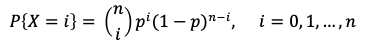

I wanted to understand and compare different binomial distributions. A binomial distribution is what you get when only one of two things can happen: pass/fail, yes/no, 0/1 (a Bernoulli random variable). For example, a car part either fails before some point in time or it doesn't.
So what this shows is how the bell-curve changes as we change the probability p and the sample size n.
The equation for each individual point Xi is given by:

The sum of all X for every n is 1.
I knew the area under the curve had to remain constant but it wasn't intuitive to me how the curves would change as the variables changed. Creating this helped me understand better. It makes sense that the curve is lowest/widest when p=0.5 and greatest/thinnest when p=0 or p=1. This is because you are gradually taking the "tails" away from either edge as you move away from p=0.5.
This visualization was created with d3 for the graph and jquery for the controls.
See also the github repo and my blog post.